What is Overwatch League?
Overwatch League is a competitive esport game hosted by Blizzard Entertainment where multiple teams compete in the game Overwatch.
These teams are from different countries and have their own name, logo and merch. Overwatch League
promotes these teams and give a big prizepool to the team who wins.
Overwatch is a great game itself for a number of reasons such as the counter heroes or metas. Overwatch
has a great variety of heroes that you can pick and play. These heroes are all unique and have different
abilities to use.
Whats so great with Overwatch is that all heroes has some sort of counter and depending
on what characters the team pick it can go good with combos with some abilities and supers/ultimates which
is a unique ability that is based on what class they are that is divided up in three categories.

Tank
The tank is a hero who has a large portion of health.
The tanks main objective is usually to be in the front line to tank incoming damage or shield the team.
Usually tanks are divided into two categories, Main-Tank and Off-Tank. Main-Tanks objective is to provide
shields to shield the damage while Off-Tanks objective is usually just doing damage but to stand in the fontline
and take damage.

Damage
A damager is a hero who primarily does damage to their opponents.
The damagers main objective is to damage the opponents, they have abilities and weapons made to deal damage.
The damagers are divided into two categories which is hitscan and projectile. Hitscan is essentially a hero
that has bullets hitting the opponents on trigger without no travel speed while projectile is bullets that
has a travel time and usually requires the player to predict where the opponents are going to in order to land.

Support
A supporter is a hero who uses it's abilities to heal teammates or give them buffs.
The supporters main objective to heal the teammates as well as give them buffs or perks that makes them faster or stronger.
The supporters are divided into two categories which is Main-Support and Off-Support. Main-Supports are heroes
that can provide a large portion of healing to all teammates while Off-Support are the heroes that gives less healing
but greater buffs or abilities for the team.
I hope the short info here that was provided helped a bit in understanding the base of the game and what the league is itself.
The tanks main objective is usually to be in the front line to tank incoming damage or shield the team.
Usually tanks are divided into two categories, Main-Tank and Off-Tank. Main-Tanks objective is to provide
shields to shield the damage while Off-Tanks objective is usually just doing damage but to stand in the fontline
and take damage.
The damagers main objective is to damage the opponents, they have abilities and weapons made to deal damage.
The damagers are divided into two categories which is hitscan and projectile. Hitscan is essentially a hero
that has bullets hitting the opponents on trigger without no travel speed while projectile is bullets that
has a travel time and usually requires the player to predict where the opponents are going to in order to land.
The supporters main objective to heal the teammates as well as give them buffs or perks that makes them faster or stronger.
The supporters are divided into two categories which is Main-Support and Off-Support. Main-Supports are heroes
that can provide a large portion of healing to all teammates while Off-Support are the heroes that gives less healing
but greater buffs or abilities for the team.